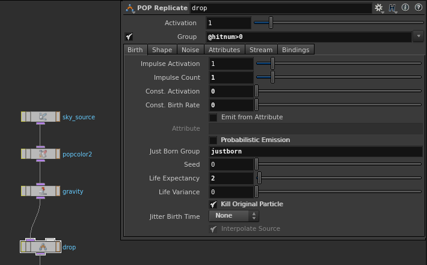

Point-based ripple shader
Posted on 2016 Oct 24 in Houdini
Generating drops point-cloud
Exemplary POP setup:
The sky_source emits rain particles. Hitting the water surface each rain particle emits one drop particle via POP Replicate. These drop particles we’ll use in the shader as a point cloud to generate ripples.
As we need hit info, the parameter Add Hit Attributes must be enabled in POP Solver.
Drops should stay steady exactly at the hit positions: Shape parameter on POP Replicate should be set to Point and there are must be no forces affecting drops.
Tip: Keep Life Expectancy as low as possible (1-2 seconds): it reduces point cloud size and improves render performance.
The justborn group we can use to emit spray particles, we don’t need it for ripple generation.
The shader
I define the shape of wave using Gaussian distribution:
, where \(x\) is wave position, \(\sigma\) is wave width.
float gauss(float sigma, x)
{
return exp(-x*x/(sigma*sigma));
}
Iterating over drops particles stored in dropsfile, we compute wave position using time age and speed vel. Then we pass x and width to gauss() function computing the wave intensity.
float ripples(vector p;
float width, vel, faloff, radius;
string dropsfile)
{
int handle = pcopen(dropsfile, "P", p, radius, 1000000);
float eval = 1.;
while (pciterate(handle))
{
float age = 0;
float dist = 0;
int rval = pcimport(handle, "point.distance", dist);
rval &= pcimport(handle, "age", age);
if (rval)
{
float x = dist - age * vel;
float wave = gauss(width, x);
wave /= (1 + faloff*age*age);
eval *= 1. - wave;
}
}
pcclose(handle);
float tmp = 1. - eval;
return tmp * tmp;
}
There are few naive ways to combine waves, but they have defects:
- multiplication: zero result always
- summation: rapid increasing of height on wave crossings
- maximum: hard creases of crossing waves
So I use inverted multiplication of inverted waves. It produces much reliable results.
I square intensity at the end to soften waves.
Adjusting the radius parameter can help to improve shader performance.
Wrap the code above to VEX Builder Operator Type and enjoy.
Further improvements
The shader can be improved next ways:
- I use inverse square attenuation, but as far as the value of Life Expectancy is known, it’s possible to compute accurate arbitrary attenuation using Ramp.
- Lookup radius also can be calculated accurately using velocity and Life Expectancy values instead of empirical fitting.
- Waves combination should be done simulating interference. Probably it requires complex numbers support.